ML inbetweens
A machine learning model generates the frames between your keyframes. Pick ML, squash and stretch, or no inbetweens per gap.
How gaps work
Khuwari is a free and open source animation tool that generates the frames between your keyframes with machine learning. Everything runs locally in your browser, your images and projects never leave your machine. You bring the art, it brings the inbetweens.
The goal is to get out of your way and let the machine handle the busywork.
A machine learning model generates the frames between your keyframes. Pick ML, squash and stretch, or no inbetweens per gap.
How gaps workSketch, ink and paint right in your browser with real layers, brush stabilizers and Krita's own brush presets, then drop the drawing straight onto your timeline.
About the paint toolDrop dots on a color layer and they fill the line art on the layer above. Each dot has its own threshold, grow radius, gradient and timing, so color stays separate from the drawing.
About color layersPan, zoom and rotate the whole frame non-destructively, keyframed on its own track. Add lens and film looks per key - fisheye, film grain, chromatic aberration, vignette, handheld shake - and the exact shot that guides your playback is the one you export.
About the cameraThe whole tool runs in your tab. The model is local, projects save as a single file, and your images and projects never leave your machine. No accounts, no uploads.
About privacyThree steps from your art to a finished animation.
Add images to the asset library or draw your frames. Any image format works, and images are scaled down automatically to keep generation fast.
Drag images onto the timeline. Set how each gap between two keyframes should behave, and let the machine fill in the rest.
Watch it back, adjust the motion, then export a video, a GIF or a frame sequence. Your project saves as a single .khuwari file.
AI is a tool for the busywork, never a replacement for the art.
We don't support AI-generated "art". We see AI as a practical tool, meant to simplify tedious tasks and make life easier. Not to replace the things we enjoy doing. We will never add features that let you generate images, music or videos. All art for this project is made by TheShovel and the Khuwari contributors, without any generative AI tools.
